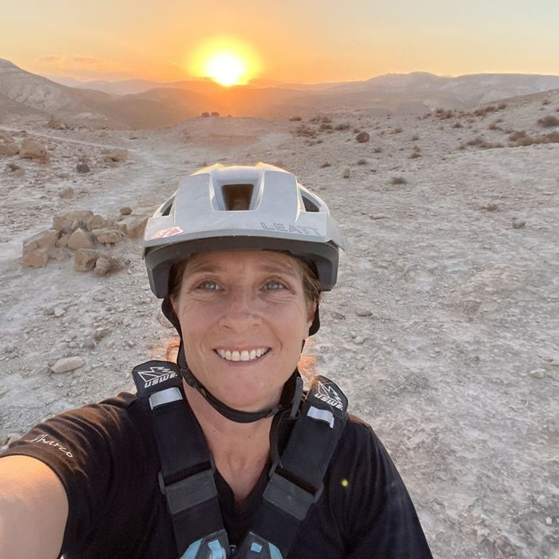

Your guide
Dina Gabai
Hi, I’m Dina Gabai, a licensed Israeli tour guide, mountain biking instructor, and founder of Dinamo Cycling Club.
I create and lead themed cycling tours that bring together local stories, beautiful landscapes, and encounters with local people, with a special connection to Jerusalem and the Judean Desert. I bring in-depth knowledge of the area, personal attention, and a love of people to every tour, creating experiences that stay with you long after you return home.
Themed cycling tours
- Ride Into JerusalemA Bar & Bat Mitzvah journey for parent and child, with letters read at the viewpoint
- Jerusalem at nightOld City gates, stone alleys and stairs, by bike after dark
- Sunrise ridesSetting out in the dark to reach the viewpoint as the sun comes up
- Vineyards of the Judean foothillsRiding between wineries and springs in Emek HaEla and Gush Etzion
- Across the Judean DesertA ride from the edge of Jerusalem down to the cliffs above the Dead Sea